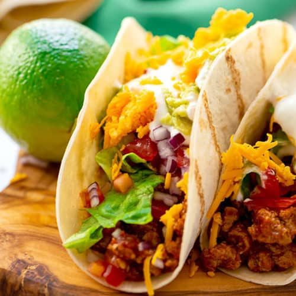

Taco Recipe

Description
This taco recipe is the classic Tex-Mex-style version of tacos that many Americans grow up with: seasoned ground beef stuffed in a crispy taco shell with additional
fillings like lettuce, cheese, tomatoes and sour cream. Even better, these ground beef tacos can be on the table in just 30 minutes.
Ingredients
- 1 lb lean ground beef
- 1 medium onion, chopped
- 1 teaspoon chili powder
- 1/2 teaspoon salt
- 1/2 teaspoon garlic powder
- 1 can (8 oz) tomato sauce
- 1 box (4.6 oz) Old El Paso™ Crunchy Taco Shells (12 Count)
- 1 1/2 cups shredded Cheddar cheese (6 oz)
- 2 cups shredded lettuce
- 2 medium tomatoes, chopped
- 3/4 cup Old El Paso™ Thick 'n Chunky salsa
- 3/4 cup sour cream, if desired
Steps
- Heat oven to 250°F. In large skillet, brown ground beef and onion over medium heat for 8 to 10 minutes or until beef is thoroughly cooked, stirring frequently. Drain.
- Stir in chili powder, salt, garlic powder and tomato sauce. Reduce heat to low; cover and simmer 10 minutes.
- Meanwhile, place taco shells on ungreased cookie sheet. Heat at 250°F. for 5 minutes.
- To assemble tacos, layer beef mixture, cheese, lettuce and tomatoes in each taco shell. Serve with salsa; top with sour cream.